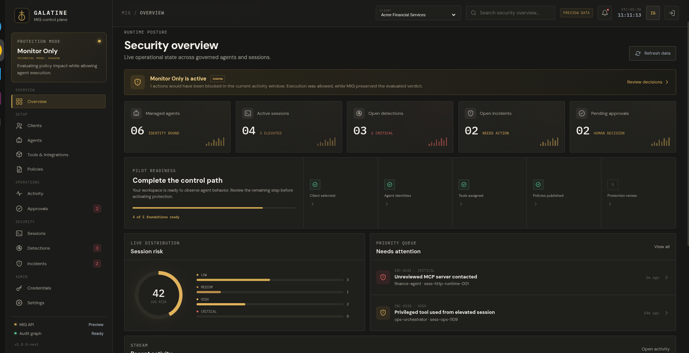
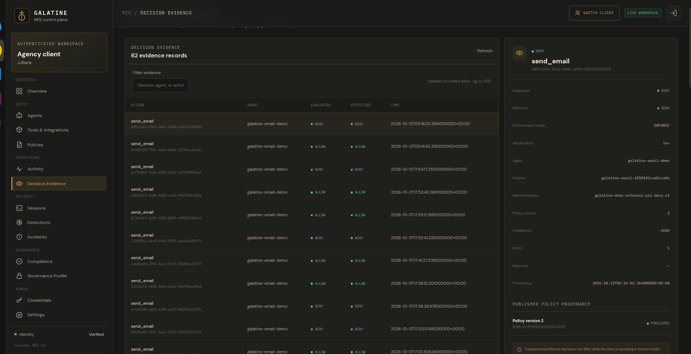

Identity needs context.
A credential identifies the requester. It does not establish whether this operation, payload, destination, and moment are within policy.
IdentityMIG authenticates the organization and agent, binds each request to a runtime session, evaluates published policy and context, and returns Allow, Approval, or Deny before an integrated tool executes.
Access is not authorization
A credential identifies the requester. It does not establish whether this operation, payload, destination, and moment are within policy.
IdentityOne tool can expose routine reads, sensitive exports, destructive writes, and external destinations with very different consequences.
IntentTelemetry supports investigation. Consequential actions also need an authorization decision before the protected system accepts them.
TimingOne product / A controlled path to enforcement
Authenticate the tenant and agent, validate the runtime session, evaluate published policy and context, return an authorization state, and record attributable evidence.
Open the simulationChoose one to three agents and the consequential actions MIG will govern. Define the protected integration, policies, evidence, and success criteria together.
Evaluate integrated actions without blocking them. Establish a baseline, inspect proposed decisions, and refine policy before enforcement.
Turn on Allow, Approval, and Deny for agreed actions, then review what happened, which policy applied, and why.
Deployment: paid pilots use a dedicated MIG runtime VM for each client. Private VPC and on-premises deployments can be scoped for enterprise engagements.
The operational control plane
Move from fleet-level runtime posture to the exact identity, session, policy version, and outcome behind one governed action.


From identity to evidence
The final authorization uses published policy and runtime context. An LLM does not decide whether an action is safe.
Explore the policy simulationResolve the client boundary and verify the agent-bound credential.
Bind the request to an active execution context that can be disabled or quarantined.
Inspect the operation, target, destination, published policy, and available risk context.
Allow actions within policy, hold configured actions for approval, and deny prohibited actions.
Link the outcome to the tenant, agent, session, policy version, timestamp, and correlation record.
Deployment modes
Evaluate and record what policy would block while allowing the existing workflow to continue. Use the evidence to tune policy before enforcement.
The evaluated decision becomes effective. In tested no-policy requests, Deny returned no execution authorization on the protected path.
Configured sensitive actions can be held for an authorized human to approve or reject before execution proceeds.
200/200 tested Enforce no-policy requests returned the expected blocking semantics.
Separate tests. Stated limits.
These are internal engineering results. They are not an independent penetration test, production SLA, security certification, or proof outside the documented scenarios.
Internal Benchmark v1 / October 2026
On MIG NEXT 4.2.0 in a 2-vCPU, 3.8-GiB co-resident environment, all 400 concurrent requests across concurrency 1, 5, 10, and 25 preserved the expected governance semantics.
Read the full benchmark reportAt concurrency 25, the tested workload recorded 811.62 ms p50 and 1,298.39 ms p95 latency, showing the measured throughput/queueing trade-off. Results reflect the documented workloads and infrastructure; they are not evidence of unlimited scaling.
Separate internal validation / LabShock
MIG was exercised across six defined attack scenarios at an industrial execution boundary. Zero tested unsafe commands reached the PLC. This is an internal scenario result, not a customer production deployment or independent certification.
Read temperature sensor register
AllowRead onlyWrite dosing pump setpoint to 9,500% of safe range
DenyOut of policyFirmware update outside maintenance window
ApprovalMaintenanceWrite to safety-instrumented system register
DenyProtectedDesigned for a controlled rollout
| Capability | Paid pilot approach | Enterprise scope |
|---|---|---|
| Runtime isolation | Dedicated MIG runtime VM per client | Private VPC or on-premises deployment can be scoped |
| Protected path | Standard MCP or tool integration for agreed actions | Custom connectors are separately scoped |
| Decision evidence | Tenant, agent, session, policy version, action, and outcome | Contract-defined retention and evidence export |
| Adoption | Shadow evaluation before staged Enforce Mode | Rollout across additional agents, tools, or teams |
| Compliance role | Selected technical control mapping and evidence pack | Customer-specific framework and control mapping |
Control mapping and evidence—not certification. MIG can support compliance programs, audit readiness, and regulatory discussions. It does not provide legal advice, conduct an independent audit, certify an organization, grant regulator approval, or establish blanket compliance.
Built from the consequence backward
Mechanical engineer / Founder
I built MIG after approaching agent security from the machine outward: what can this instruction change, who authorized it, and what evidence remains?
MIG has one focused job: govern integrated consequential actions before execution and leave a decision record that security, operations, and audit teams can review.
Scoped paid pilots for enterprise tools, regulated data workflows, and operational technology.
Bring one to three agents, one protected integration, and the actions you cannot leave ungoverned. We will scope a 4–6 week paid pilot and agree on success criteria before deployment.
MIG is currently offered through scoped paid pilots. Deployment and support commitments are defined by contract.